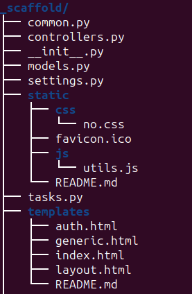
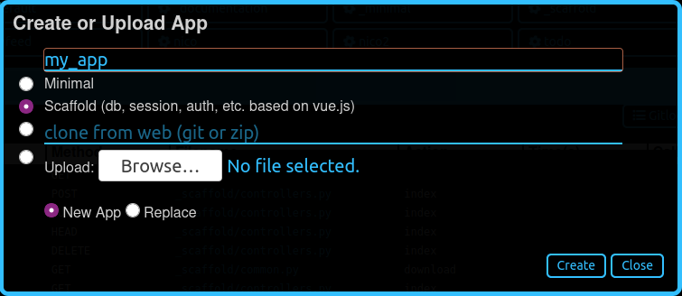

Creating an app
Do princípio
Apps can be created using the dashboard or directly from the filesystem. Here, we are going to do it manually, as the Dashboard is already described in its own chapter.
Keep in mind that an app is a Python module; therefore it needs only a
folder and a __init__.py file in that folder.
Nota
An empty __init__.py file is not strictly needed since Python 3.3, but it will be useful later on.
Open a command prompt and go to your main py4web folder. Enter the following simple commands in order to create a new empty myapp app:
mkdir apps/myapp
echo '' > apps/myapp/__init__.py
Dica
for Windows, you must use backslashes (i.e. \) instead of
slashes.
If you now restart py4web or press the “Reload Apps” in the Dashboard, py4web will find this module, import it, and recognize it as an app, simply because of its location. By default py4web runs in lazy watch mode (see the Opção `` comando run``) for automatic reloading of the apps whenever it changes, which is very useful in a development environment. In production or debugging environment, it’s better to run py4web with a command like this:
py4web run apps --watch off
A py4web app is not required to do anything. It could just be a container for static files or arbitrary code that other apps may want to import and access. Yet typically most apps are designed to expose static or dynamic web pages.
Páginas estáticas
Para expor páginas estáticas você simplesmente precisa para criar um `` subpasta static`` e qualquer arquivo lá será automaticamente publicado:
mkdir apps/myapp/static
echo 'Hello World' > apps/myapp/static/hello.txt
O arquivo recém-criado será acessível em
http://localhost:8000/myapp/static/hello.txt
Note que `` static`` é um caminho especial para py4web e arquivos somente sob o `` static`` pasta são servidos.
Important: internally py4web uses the ombott (One More BOTTle) <https://github.com/valq7711/ombott>`__, It supports streaming, partial content, range requests, and if-modified-since. This is all handled automatically based on the HTTP request headers.
Páginas web dinâmicas
Para criar uma página dinâmica, você deve criar uma função que retorna o conteúdo da página. . Por exemplo editar a `` novaaplicacao / __ __ Init py`` como se segue:
import datetime
from py4web import action
@action('index')
def page():
return "hello, now is %s" % datetime.datetime.now()
Reload the app, and this page will be accessible at
http://localhost:8000/myapp/index
ou
http://localhost:8000/myapp
(Note que o índice é opcional)
Ao contrário de outras estruturas, nós não importar ou iniciar o servidor web dentro do `` código myapp``. Isso ocorre porque py4web já está em execução, e pode servir vários aplicativos. py4web importa nossas funções de código e expõe decorados com `` @Action () . Note também que prepends py4web `` / myapp (ou seja, o nome do aplicativo) para o caminho url declarado na ação. Isso ocorre porque existem vários aplicativos, e eles podem definir rotas conflitantes. Antecedendo o nome do aplicativo remove a ambiguidade. Mas há uma exceção: se você chamar seu aplicativo `` _default``, ou se você criar um link simbólico do `` _default`` para `` myapp``, então py4web não irá anteceder qualquer prefixo para as rotas definidas dentro do aplicativo .
Em valores de retorno
py4web actions should return a string or a dictionary. If they return a
dictionary you must tell py4web what to do with it. By default py4web
will serialize it into json. For example edit __init__.py again and
add at the end
@action('colors')
def colors():
return {'colors': ['red', 'blue', 'green']}
Esta página será visível na
http://localhost:8000/myapp/colors
e retorna um objeto JSON `` { «cores»: [ «vermelho», «azul», «verde»]} ``. Observe que escolhemos nomear a função o mesmo que a rota. Isso não é necessário, mas é uma convenção que muitas vezes se seguirão.
Você pode usar qualquer linguagem de modelo para transformar seus dados em uma string. PY4WEB vem com yatl, um capítulo inteiro será dedicado mais tarde e iremos fornecer um exemplo em breve.
Rotas
É possível mapear padrões do URL em argumentos da função. Por exemplo:
@action('color/<name>')
def color(name):
if name in ['red', 'blue', 'green']:
return 'You picked color %s' % name
return 'Unknown color %s' % name
Esta página será visível na
http://localhost:8000/myapp/color/red
A sintaxe dos padrões é o mesmo que os rotas Garrafa <https://bottlepy.org/docs/dev/tutorial.html#request-routing> __. Uma rota WildCard pode ser definida como
`` <Name> `` ou
`` <Name: filter> `` ou
<name:filter:config>
And these are possible filters (only :re has a config):
: Resultados intdígitos (assinatura) e converte o valor de número inteiro.: Floatsemelhante a: int mas para números decimais.: Pathcorresponde a todos os personagens, incluindo o caractere de barra de uma forma não-ganancioso, e pode ser usado para combinar mais de um segmento de caminho.:re[:exp]allows you to specify a custom regular expression in the config field. The matched value is not modified.
O padrão de harmonização o carácter universal é passado para a função sob a variável especificada `` name``.
Além disso, o decorador acção tem um argumento `` method`` opcional que pode ser um método HTTP ou uma lista de métodos:
@action('index', method=['GET','POST','DELETE'])
Você pode usar vários decoradores para expor a mesma função em várias rotas.
O objeto `` request``
De py4web você pode importar `` request``
from py4web import request
@action('paint')
def paint():
if 'color' in request.query:
return 'Painting in %s' % request.query.get('color')
return 'You did not specify a color'
Esta ação pode ser acessado em:
http://localhost:8000/myapp/paint?color=red
Notice that the request object is equivalent to a Bottle request object. with one additional attribute:
request.app_name
Which you can use the code to identify the name and the folder used for the app.
Modelos
Para utilizar um yatl modelo que você deve declará-lo. Por exemplo, criar um arquivo `` apps / myapp / templates / paint.html`` que contém:
<html>
<head>
<style>
body {background:[[=color]]}
</style>
</head>
<body>
<h1>Color [[=color]]</h1>
</body>
</html>
em seguida, modificar a ação de tinta para usar o modelo e padrão para verde.
@action('paint')
@action.uses('paint.html')
def paint():
return dict(color = request.query.get('color', 'green'))
A página irá agora mostrar o nome da cor em um fundo da cor correspondente.
O ingrediente chave aqui é o decorador `` @ action.uses (…) . Os argumentos de `` action.uses são chamados luminárias ** **. Você pode especificar vários dispositivos elétricos em um decorador ou você pode ter vários decoradores. Chaves são objectos que modificam o comportamento da acção, que podem precisar de ser inicializado por pedido, que podem realizar uma filtragem de entrada e de saída da acção, e que pode depender de cada-outro (eles são semelhantes no seu âmbito à garrafa encaixes, mas eles são declarados por ação, e eles têm uma árvore de dependência que será explicado mais tarde).
O tipo mais simples de acessório é um modelo. Você especifica que simplesmente dando o nome do arquivo a ser usado como modelo. Esse arquivo deve seguir a sintaxe yatl e deve estar localizado no diretório `` templates`` pasta do aplicativo. O objeto retornado pela ação serão processados pelo modelo e se transformou em uma corda.
Você pode facilmente definir luminárias para outras linguagens de modelo. Isto é descrito mais tarde.
Alguns built-in luminárias são:
o objeto DAL (que diz py4web para obter uma conexão de banco de dados a partir da piscina a cada pedido, e comprometer-se em caso de sucesso ou reversão em caso de falha)
o objeto de sessão (que diz py4web para analisar o cookie e recuperar uma sessão a cada pedido, e para salvá-lo, se alterado)
o objeto Tradutor (que diz py4web para processar o cabeçalho Accept-Language e determinar óptima internacionalização / pluralização regras)
o objeto Auth (que diz py4web que as necessidades de aplicativos acessar às informações do usuário)
Eles podem depender um do outro. Por exemplo, a sessão pode precisar a DAL (ligação de base de dados), e Auth podem precisamos de ambos. As dependências são tratados automaticamente.
The _scaffold app
Most of the times, you do not want to start writing code from scratch.
You also want to follow some sane conventions outlined here, like not
putting all your code into __init__.py. PY4WEB provides a
Scaffolding (_scaffold) app, where files are organized properly and many
useful objects are pre-defined. Also, it shows you how to manage users and
their registration.
Just like a real scaffolding in a building construction site, scaffolding
could give you some kind of a fast and simplified structure for your project,
on which you can rely to build your real project.
Normalmente você vai encontrar o aplicativo andaime sob apps, mas você pode facilmente criar um novo clone de la manualmente ou usando o Dashboard.
Aqui está a estrutura da árvore do `` aplicativo _scaffold``:
O aplicativo andaime contém um exemplo de uma ação mais complexa:
from py4web import action, request, response, abort, redirect, URL
from yatl.helpers import A
from . common import db, session, T, cache, auth
@action('welcome', method='GET')
@action.uses('generic.html', session, db, T, auth.user)
def index():
user = auth.get_user()
message = T('Hello {first_name}'.format(**user))
return dict(message=message, user=user)
Observe o seguinte:
request,response,abortare defined byombottwhich is a minimal and fast bottlepy spin-off.`` `` Redirect`` e URL`` são semelhantes aos seus homólogos web2py
ajudantes ( `` A``, `` div``, `` SPAN``, `` IMG``, etc.) deve ser importado a partir `` yatl.helpers``. Eles trabalham muito bem como em web2py
`` Db``, `` session``, `` T``, `` cache``, `` auth`` são Chaves. Eles devem ser definidos em `` common.py``.
`` @ Action.uses (auth.user) `` indica que esta acção espera um válido logado recuperáveis usuário por `` auth.get_user ()
. Se isso não for o caso, esta ação redireciona para a página de login (definido também em `` common.pye usando o componente auth.html Vue.js).
Quando você começar a partir de andaime, você pode querer editar `` settings.py``, `` templates``, `` models.py`` e `` controllers.py`` mas provavelmente você não precisa mudar nada no `` common.py``.
Em seu HTML, você pode usar qualquer biblioteca JS que você quer, porque py4web é agnóstica para a sua escolha de JS e CSS, mas com algumas exceções. O `` auth.html`` que lida com registro / login / etc. usa um componente vue.js. Portanto, se você quiser usar isso, você não deve removê-lo.
Copying the _scaffold app
The scaffold app is really useful, and you will surely use it a lot as a starting point for testing and even developing full features new apps.
It’s better not to work directly on it: always create new apps copying it. You can do it in two ways:
using the command line: copy the whole apps/_scaffold folder to another one (apps/my_app for example). Then reload py4web and it will be automatically loaded.
using the Dashboard: select the button
Create/Upload Appunder the «Installed Applications» upper section. Just give the new app a name and check that «Scaffold» is selected as the source. Finally press theCreatebutton and the dashboard will be automatically reloaded, along with the new app.
Watch for files change
As described in the Opção `` comando run``, Py4web facilitates a
development server’s setup by automatically reloads an app when its
Python source files change (by default).
But in fact any other files inside an app can be watched by setting a
handler function using the @app_watch_handler decorator.
Two examples of this usage are reported now. Do not worry if you don’t
fully understand them: the key point here is that even non-python code
could be reloaded automatically if you explicit it with the
@app_watch_handler decorator.
Assista SASS arquivos e compilá-los quando editado:
from py4web.core import app_watch_handler
import sass # https://github.com/sass/libsass-python
@app_watch_handler(
["static_dev/sass/all.sass",
"static_dev/sass/main.sass",
"static_dev/sass/overrides.sass"])
def sass_compile(changed_files):
print(changed_files) # for info, files that changed, from a list of watched files above
## ...
compiled_css = sass.compile(filename=filep, include_paths=includes, output_style="compressed")
dest = os.path.join(app, "static/css/all.css")
with open(dest, "w") as file:
file.write(compiled)
Validar sintaxe javascript quando editado:
import esprima # Python implementation of Esprima from Node.js
@app_watch_handler(
["static/js/index.js",
"static/js/utils.js",
"static/js/dbadmin.js"])
def validate_js(changed_files):
for cf in changed_files:
print("JS syntax validation: ", cf)
with open(os.path.abspath(cf)) as code:
esprima.parseModule(code.read())
Filepaths passed to @app_watch_handler decorator must be
relative to an app. Python files (i.e. «*.py») in a list passed to the
decorator are ignored since they are watched by default. Handler
function’s parameter is a list of filepaths that were changed. All
exceptions inside handlers are printed in terminal.
Domain-mapped apps
In production environments it is often required to have several apps being served by a single py4web server, where different apps are mapped to different domains.
py4web can easily handle running multiple apps, but there is no build-in mechanism for mapping domains to specific applications. Such mapping needs to be done externally to py4web – for instance using a web reverse-proxy, such as nginx.
While nginx or other reverse-proxies are also useful in production environments for handling SSL termination, caching and other uses, we cover only the mapping of domains to py4web applications here.
An example nginx configuration for an application myapp mapped to
a domain myapp.example.com might look like that:
server {
listen 80;
server_name myapp.example.com;
proxy_http_version 1.1;
proxy_set_header Host $host;
proxy_set_header X-PY4WEB-APPNAME /myapp;
location / {
proxy_pass http://127.0.0.1:8000/myapp$request_uri;
}
}
This is an example server block of nginx configuraiton. One would have to create a separate such block for each app/each domain being served by py4web server. Note some important aspects:
server_namedefines the domain mapped to the appmyapp,proxy_http_version 1.1;directive is optional, but highly recommended (otherwise nginx uses HTTP 1.0 to talk to the backend-server – here py4web – and it creates all kinds of issues with buffering and otherwise),proxy_set_header Host $host;directive ensures that the correctHostis passed to py4web – heremyapp.example.comproxy_set_header X-PY4WEB-APPNAME /myapp;directive ensures that py4web (and ombott) knows which app to serve and also that this application is domain-mapped – pay specific attention to the slash (/) in front of themyappname – it is required to ensure correct parsing of URLs on ombott level,finally
proxy_pass http://127.0.0.1:8000/myapp$request_uri;ensures that the request is passed in its entirity ($request_uri) to py4web server (here:127.0.0.1:8000) and the correct app (/myapp).
Such configuration ensures that all URL manipulation inside ombott and py4web - especially in modules such as Auth, Form, and Grid are done correctly using the domain to which the app is mapped to.